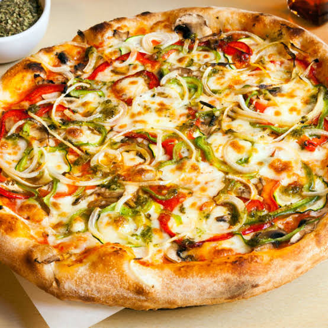

Chicken Fajita

Ingredients
Prepare the tought:
-
1 and 1/3cups (320ml) warm water
-
2 and 1/4 teaspoons instant yeast
-
1 Tablespoon (13g) sugar
-
2 Tablespoons(30ml) olive oil
-
3/4 teaspoon salt
-
3 and 1/2cups (440g) flour
Instructions
Prepare the tought:
-
Whisk the warm water, yeast and sugar together in the bowl.
-
Ad the olive oil, salt and flour. Beat on low speed for 2 minutes.
-
Turn the dough out onto a lightly floured surface. Kneed the dough for 3-4 minutes.
-
Lightly grease a bowl with oil or nonstick spray.
-
Place the tough in the bowl.
-
Cover the bowl with a clean kitchen towel.
-
Preheat oven to 475℉ (246℃).
-
Lightly grease baking sheet or pizza pan with olive oil.
-
Sprinkle lightly with carnmeal.
Shape the dough:
-
Divide the doogh in half
-
Flatten the dough into a disc.
-
Placed on a prepared pan.
-
Lift the edge of the dough up tp create a lip around the edges.
Top and Bake the pizza:
-
Top the pizza with sauce, onion slices, pepperani, capsicum, mushroom, basil leaves, olives, cheese and bake for 12-15 minutes.
-
Since hot pizza and serves immediately.
Thanks For Visting